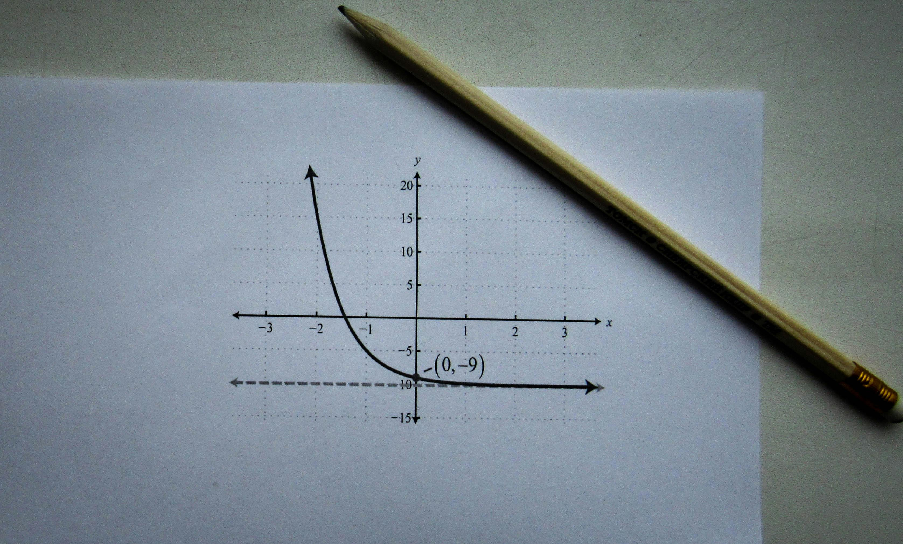

Ecuaciones de Segundo Grado
En este apartado estudiamos las ecuaciones de segundo grado, fundamentales en la enseñanza
de las matemáticas en niveles de secundaria y bachillerato.
1. Forma general
Una ecuación de segundo grado tiene la forma:
\( ax^2 + bx + c = 0 \)
donde \(a\), \(b\) y \(c\) son números reales y \(a \neq 0\).
Representación gráfica
Las ecuaciones de segundo grado se representan mediante parábolas.

2. Fórmula general
$$ x = \frac{-b \pm \sqrt{b^2 - 4ac}}{2a} $$
Esta fórmula permite calcular las soluciones de cualquier ecuación de segundo grado.
3. Ejemplo
Resolver la ecuación:
\( x^2 - 5x + 6 = 0 \)
Aplicando la fórmula obtenemos las soluciones:
\( x = 2 \) y \( x = 3 \)
4. Actividad propuesta
Resuelve la siguiente ecuación:
\( x^2 + 2x - 3 = 0 \)
5. Reflexión sobre la actividad
El uso de herramientas como MathJax permite presentar contenido matemático de forma clara,
visual y accesible, facilitando la comprensión del alumnado.
6. Navegación
← Volver al inicio